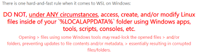
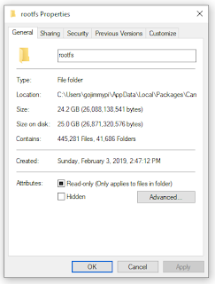

Text editor issues? How can that be? Visual Studio ("VS") has been around for
years. How can there be problems with something as basic as a text editor? The answer lies in the history of differences between Linux and Windows. My workstation is a Windows machine. The day job is a Microsoft shop and all of my development is on Windows. The key tools I use every day only run on Windows. My FPGA toolchain however, is all in Ubuntu Linux:
WSL Ubuntu on Windows, to be exact.
With WSL came some really amazing capabilities in Windows. Just having a Linux prompt on a Windows machine that is in a DOS-like window and not a VM is just magical. But the really incredible thing is that you can call Linux apps from DOS, and you can call DOS/Windows apps from WSL! Also: The file system is shared! My
C:\workspace directory for Windows is
/mnt/c/workspace in WSL. (
be careful when accessing WSL directories; in particular
DO NOT access the Linux files inside of your %LOCALAPPDATA% folder; perhaps you found the rootfs directory in Local\Packages\CanonicalGroupLimited.UbuntuonWindow...)
|
 |
|
Snip of warning to not edit WSL %LOCALAPPDATA% files. |
Still, it is good to be aware of the directory, as it can use up a LOT of disk space. Even though I keep most of my GitHub repos and toolchain source in my C:\workspace directory, my WSL rootfs still takes up 25GB and 450,000 files.
|
 |
|
Windows WSL rootfs files |
So just because you
can
access those files from Visual Studio: DON'T.
Be aware that in WSL2, there's apparently a
performance issue when using /mnt. All my work is in the original WSL. I do not yet have WSL2, as
insider build 18917 is required
. So I can't really speak to this.
Alas with these new found capabilities, the underlying fundamental differences between Windows and Linux become increasingly painful for developers. I encountered this years ago with my first Raspberry Pi. Yes, I was the kind of person that would mount the file system on my Raspberry Pi as a network share and edit files in... yes, you guess it: Visual Studio. This was almost a WSL-like experience with a putty terminal session and a drive map that made it look like my Raspberry Pi was a local file system.
There are some terrible gotchas in Visual Studio for Linux users. Not only will VS take a text file with LF line-ending characters and silently replace them with CR/LF at save time... (Linux does not play well with carriage returns at the end of lines in bash shell scripts)... no, even worse is when creating a simple text file, VS decides on its own to quietly add 3 hidden
BOM characters at the beginning of the file. Many Linux apps will be quite intolerant of that when expecting a simple text file.
So the first thing to be aware of... is that Visual Studio by default creates text files with BOM characters, when doing the Right Click on Project - Add - New Item - Text File:
My suggestion to Microsoft here is to add options to this list. The "TextFile with BOM" file option should be explicitly labeled as such as creation time, along with UTF-16 encoded files. If nothing else, a Text File should be just that: a plain, nothing-else, just UTF-8 character file.
Many people will say "
why not just use VS Code?". Yes, it is true
VS Code handles this all vastly better. I did have my own issues with VS Code, such as a
problematic files.eol setting, but that was resolved and these days VS Code is really quite impressive. For example, here's VS Code with a clear option of encoding and CRLF settings at the bottom of the editor:
Still, I am most comfortable in Visual Studio. Plus, thank you Day Job for the
MSDN Enterprise subscription. I like the rich features, debugging, and vast array of other tools. I do use VS Code, but for different things. Even without the enterprise level, the free
Visual Studio Community Edition is still quite excellent.
Fortunately, there are folks at Microsoft that are listening! I had a great offline discussion with
@robotdad who will hopefully will be able to encourage some of these things to changed. This has got to be a priority if Microsoft is going to embrace WSL.
So how does the BOM issue manifest itself? The first time I tried to do an FPGA build in Visual Studio, it failed with a bizarre error message:
At first, it is a curious "no such command read_verilog" message. But upon closer inspection, what are those odd characters between "command" and "read"? Those pesky BOMs.
Now, there's no easy way that I've found to fix this. One option is to open the file with VS Code. But how crazy is that?? The whole point is to use Visual Studio with FPGA devices. Next - Visual Studio has a built-in Binary Editor. Right click on the file and select "Open with..." then choose "Binary Editor:
When viewing the file here, we can immediately see there's more than meets the eye:
As this is a binary editor, you can simply put the cursor on either the text or hex digits and press delete or backspace to remove the extra three characters.
This is such a big problem in Visual Studio, that there's an entire
Fix File Encoding Extension that was first released
8 years ago, with nearly
30,000 downloads! Clearly I'm not the only one that has had this problem.
Although the above solutions work well for the 3 leading BOM characters, it is not so great for finding an replacing all the CR/LF characters with just LF. This too, is a key feature that Visual Studio shockingly ignores. A cardinal rule of text editors: if you find a text file that has line endings with only LF characters, leave it that way upon save! Instead, Visual Studio will silently replace the LF characters with CR/LF and/or add them. Try running a bash script in WSL with CR characters for line endings. Not a pretty sight. The symptom that you have errant CR characters will be the
\r' : command not found
" like this.
{% include code_header.html %}
./HelloWorld.sh: line 5: $'yosys\r': command not found
The
dos2unix command in WSL becomes your friend. I also have a
script for converting all script files. Although an external command, this fixes both the BOM and CRLF issues. Note also: the GitHub integration does a really poor job of recognizing these changes - particularly when hidden characters are the
only
change in a text file.
The problems are not limited to copy and paste from
other applications! Copy a block of text file editing a file in VS that is known to have only LF line terminations... and then paste it back into the same file. Check out the result with the binary editor: all of the LF terminations have been replaced with CR/LF. Not cool. No-one ever noticed or cared in Windows, but this is just horrible for files used in Linux. For example: I ran into this
when processing lpf files with nextpnr
.
Suggestion to Microsoft: honor line endings and fix the GitHub detection and change tracking of line endings.
Bigger suggestion to Microsoft: have some sort of "
strip hidden characters and formatting when pasting text" capability in Windows. Search for "ctrl-shift v" (the intuitive solution); it typically doesn't work. There are so many apps that I copy and paste first into Notepad, then in destination, just because I don't want all the original formatting. I've been burned on more than one occasion copying sample code from a PDF, or a web site like stackoverflow, or often just some quote from a web page that I'm pasting into an email - and get more than I bargained for with hidden characters and wonky formatting that I don't want. This is also a problem in Windows alone: copy some Linux commands from Notepad into a bash script in Visual Studio... yup, you got it: the line endings are all CR/LF even if the file was only using LF. Under no circumstances should LF-only text be pasted back as LF/CR.
The next thing to be aware of: on at least some (most?) systems... is that Visual Studio is still a 32-bit app. On a 64-bit operating system, WSL will be 64 bit. What's the big deal? Well, if you want to call a WSL app from Visual Studio on a 64 bit system, you cannot do this:
{% include code_header.html %}
wsl yosys Verilog.ys
You
can do that from a DOS prompt, but
not
from a VS build script. Otherwise an error like this will occur:
{% include code_header.html %}
1>------ Build started: Project: SampleFail, Configuration: Release Any CPU ------
1> 'c:\windows\system32\wsl.exe' is not recognized as an internal or external command,
1> operable program or batch file.
1>C:\Users\gojimmypi\source\repos\SampleFail\SampleFail\SampleFail.csproj(16,5): error MSB3073: The command "c:\windows\system32\wsl.exe yosys Verilog.ys" exited with code 9009.
========== Build: 0 succeeded, 1 failed, 0 up-to-date, 0 skipped ==========
Whaat? "
not recognized as an internal or external command"? Yet the wsl.exe file is
right there! Well, there are more magic tricks going on behind the scenes to make 32bit and 64 bit apps all work together. This is called the
File System Redirector
. Read the first sentence on that page, it is not a typo:
The %windir%\System32 directory is reserved for 64-bit applications on 64-bit Windows.
Yes, System32
is for 64 bit apps. Pretty crazy, eh? So ya - the solution is wow. No, literally:
WOW64. I've used this in
registry access at the day job, but this was the first I had seen it for file systems. The trick here is a magical pseudo-directory called
Sysnative. If you go looking for it, you won't find it:
But if you try to
use it in a path from Visual Studio.... voila! But note you
cannot
use this interactively in a DOS prompt:
{% include code_header.html %}
%windir%\Sysnative\wsl.exe yosys Verilog.ys
In the category of feature requests for Microsoft: it would be awesome to have a DOS command prompt have the option "run as 32bit app" to test and debug Visual Studio build scripts that can "see" the
Sysnative
directory.
Suggestion to Microsoft: have an environment variable that ensures proper usage of
System32 or
Sysnative automatically. I suppose the PROCESSOR_ARCHITECTURE is a workaround. (look for values like AMD64, x86, see
stackoverflow) . For me, I'll probably use the
if exist
:
{% include code_header.html %}
echo off
IF EXIST "%windir%\Sysnative\wsl.exe" (
echo "Using Sysnative\wsl"
) ELSE (
IF EXIST "%windir%\System32\wsl.exe" (
echo "Using System32\wsl"
) ELSE (
echo " WSL Not found!"
)
)
UPDATE: I encountered problems where Visual Studio was not properly highlighting Arduino/C/C++ syntax code and intellisense using Visual Micro. I eventually realized this was because the parent directory where my project was created (in my case the C:\workspace directory)... had been previously flagged as case sensitive in WSL. See
this blog
for more details.
In short: normal Visual Studio projects should NOT be created in a case-sensitive directory!
To test if a directory is case sensitive:
{% include code_header.html %}
fsutil.exe file queryCaseSensitiveInfo c:\workspace\
To disable directory case sensitivity:
{% include code_header.html %}
fsutil.exe file setCaseSensitiveInfo c:\workspace\ disable
So in the end, yes: there are quite a few "issues" for the Visual Studio WSL user. Most seem to be relatively simply, petty fixes. I'm hoping these issues can be addressed by Microsoft so that the Visual Studio development with WSL is a bit more friendly.
Copyright (c) gojimmypi all rights reserved. Blogger Image Move Cleaned: 5/3/2021 1:35:54 PM
{kind=link}
{kind=link}
{kind=link}
{kind=link}
{kind=link}
{kind=link}
{kind=link}
{kind=link}